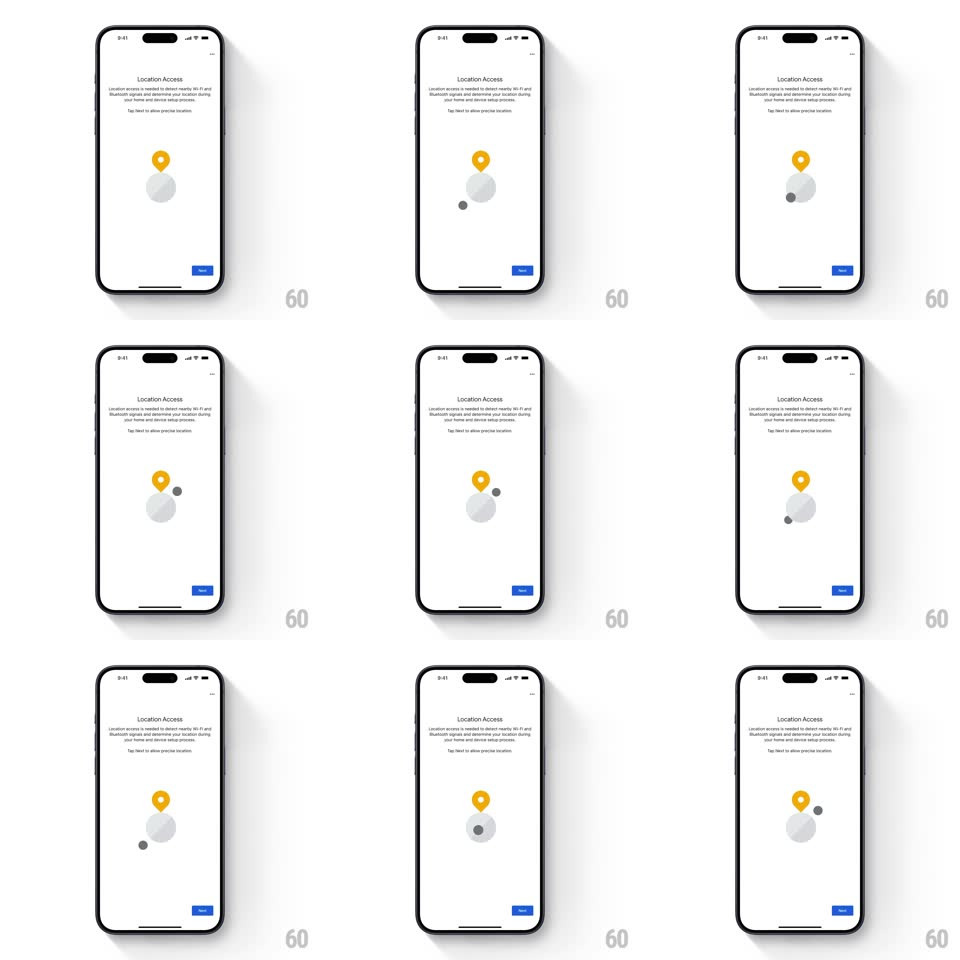

Media
Frame-by-frame

Rebuild this interaction 1:1: Google Home's location-access illustration - a looping vector animation on the permission explainer screen: an expanding radar wave ripples out from a yellow location pin, a small beacon dot orbits the pin's base, and the pin pulses gently.

Rebuild this interaction 1:1: Google Home's location-access illustration - a looping vector animation on the permission explainer screen: an expanding radar wave ripples out from a yellow location pin, a small beacon dot orbits the pin's base, and the pin pulses gently. ## Integration Integration: stack-agnostic spec - springs given as stiffness/damping, timed motions as duration + curve; map every value to your framework and animation library of choice. ## Scene White explainer page: "Location Access" headline, body copy about nearby Wi-Fi and Bluetooth signals, centered illustration of a yellow map pin standing on a light-grey ground disc, blue Next button bottom-right. ## Motion spec Pattern: looping illustration with radar ripple. - The pin pulses: scale 1 -> 1.06 -> 1 (1.6s ease-in-out loop), anchored at its tip on the ground disc. - A radar ring emits from the pin's base: ring expands outward (scale 0.2 -> 1.4) while fading (opacity 0.5 -> 0), 2.4s loop; a second ring repeats offset by half the loop for a continuous ripple. - A small grey beacon dot orbits the ground disc (radius ~60% of disc radius, 4s linear loop), growing slightly as it passes the front (scale 0.8 -> 1.1 -> 0.8) to fake depth. - The ground disc breathes with the pulse (scale 1 -> 1.02, same 1.6s loop). ## Calibration - All loops are phase-locked to the pin pulse - the ripple starts at the pin's scale peak. - Everything is flat vector with soft shadows; no gradients beyond the ring fade. ## Reduced motion Static illustration: pin at rest, one faint ring, no orbit. ## Don't miss - The beacon orbit passes behind the pin at the back of the loop (z-order swap). - The ripple rings are ellipses matched to the disc's perspective, not circles.